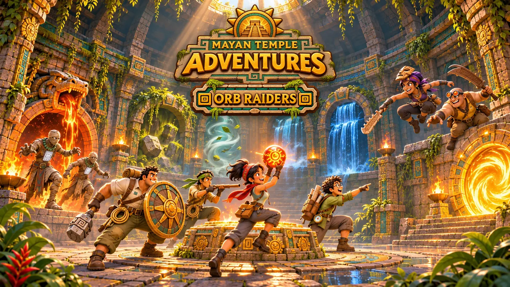

Home / Game Types
Game type · PvPvE
Orb Raiders
Raid the elemental sanctums for relics and orbs, then make it to a Sun Portal before the temple seals.
Crews of Climbers work Oxlahun's bounty board, raiding the four elemental sanctums for relics and orbs. They are exactly the greedy adventurers the temple was built to trap.
Risen guardians patrol the wings, Guardian Spirits roam between them, and the other crews want the same loot. Grab what you can, then reach a Sun Portal before the temple seals. You only ever risk what you picked up in that match. K'in warns everyone equally, and does not approve.
- Genre
- PvPvE, extraction, squads
- Players
- 8–16: four crews of four, or eight duos
- Match
- 15 minutes (Raid), 10 minutes (Orb Rush)
- Tone
- Stylised melee and ranged, no realistic firearms
- Release
- Last, tested first as a weekend event
The Sanctum Ring
Four wings around the Sun Well
Built from the rooms of Tier IV, joined into one connected map with four jungle camps to start from.
| Zone | Orb | Hazards | To claim it |
|---|---|---|---|
| Ember Wing | Fire | lava channels, burning bridges, fire jets | light four braziers in 30 seconds |
| Ossuary Wing | Earth | cracked walls, heavy plates, boulders | push two boulders onto the plates |
| Rampart Wing | Wind | gusts, updrafts, open sky | ride the updrafts to the spire top |
| Reservoir Wing | Water | rising and falling water, currents | claim it at low water |
| Sun Well | — | roaming Guardian Spirits | the richest vault, opens at 8 minutes |
A raid
Fifteen minutes, three portals
- 0:00
Crews spawn at the jungle camps with a basic kit and one bounty card each.
- 6:00
The first Sun Portal opens for 60 seconds. Leave early with less, or stay.
- 8:00
The Sun Well opens, and Guardian Spirits start to roam.
- Any time
Claim an orb and its power is yours for the match, but you glow, and everyone sees you on the map.
- 14:00
The last portal opens, and the temple starts sealing its wings one by one.

Quick mode
Orb Rush
Two teams, four orbs on their altars, ten minutes. Hold orbs at your team's Sun Portal to score. Carriers glow, and an orb drops when its carrier goes down. Quick to read, and the first thing to be built and tested.